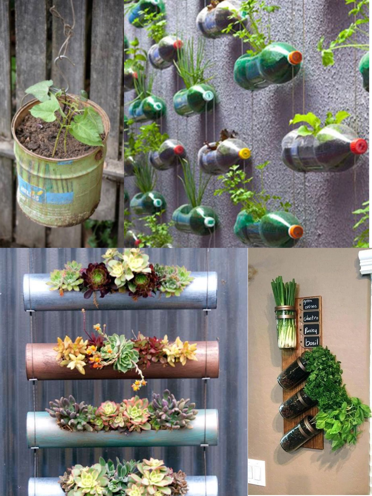

Design by yourself
Waste plastic bottles, coffee cans, and even paint buckets are good tools that can be reused. They can be used as planting containers for your vertical garden. Because they are small and light, you can even hang them directly on your wall with wires, which means it will also help you save some expense. You can use your imagination with your children and start building your walls.